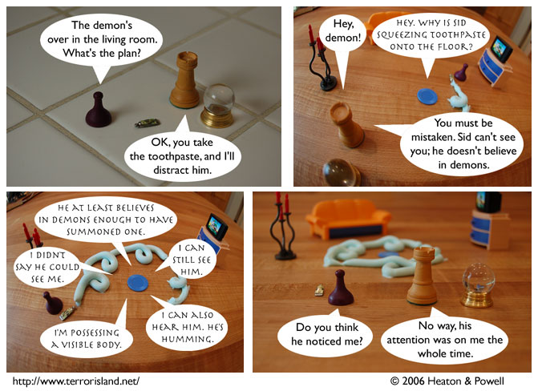

Strip #82
— Wednesday, December 20, 2006
That tube held a surprising amount of toothpaste.
Notes, Thoughts, &c.
Ben’s Notes
It’s times like this that I’m glad to be making a photocomic. If this were a drawn comic, it wouldn’t give me an excuse to play with toothpaste. Unless the comic were drawn with toothpaste, I suppose.
Oh, almost forgot. We’re participating in some sort of “webcomic battle” site. You can click on the button below to see what’s going on with that.

Lewis’s Notes
I promised double funny comments today. I found out, though, that Internet has outlawed double funny comments because that’s the sort of thing the man does. In protest, I won’t even be writing single funny comments today.